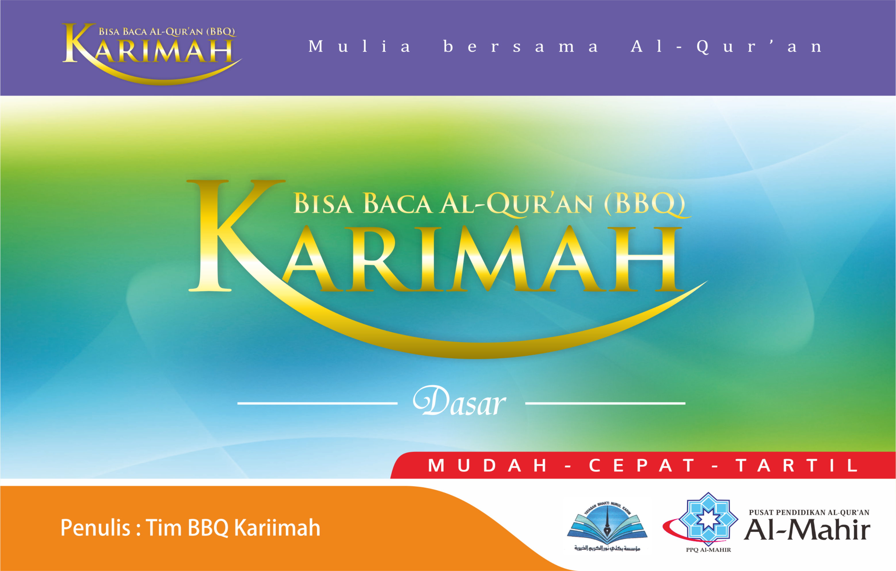
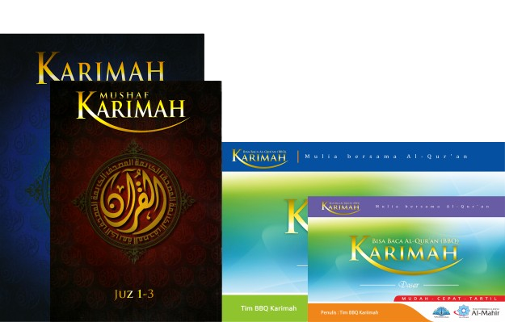

METODE KARIMAH
Metode Karimah adalah panduan belajar membaca Al-Qur'an yang disusun oleh tim asatidzah dari Pusat Pendidikan Al-Qur'an (PPQ) Al-Mahir. Metode ini telah diterima dengan baik oleh masyarakat di berbagai daerah di Indonesia dan telah membantu ribuan orang untuk bisa membaca Al-Qur'an dengan mudah dan cepat
Apa saja produk Karimah dan Apa yang membuat METODE KARIMAH Menjadi Unggul?
Produk Kami

Mushaf karimah adalah mushaf yang menggunakan standart prnulisan rasm utsmani dan dhabth mushaf madinah
Mushaf Karimah rasm Utsmani Juz 1-3
Rp10.000

Mushaf karimah adalah mushaf yang menggunakan standart prnulisan rasm utsmani dan dhabth mushaf madinah
Mushaf Karimah rasm Utsmani Juz 29-30
Rp10.000
karimah kitabah adalah Mushaf untuk belajar menulis huruf Al-Qur'an dengan menebalkan huruf hurufnya.
Karimah Kitabah Juz 29-30
Rp35.000

Rp45.000
Karimah Dasar
Memperkenalkan dasar-dasar membaca Al-Qur'an dengan cara yang mudah dipahami

Rp30.000
Karimah Tahsin
Tingkat lanjutan untuk memperbaiki dan memperindah bacaan Al- Qur'an Anda.
Keunggulan Kami
Standar Internasional
Disusun berdasarkan sistem penulisan Al-Qur'an standar Rasm Utsmani dan Dhabth dari Mushaf Al-Madinah An-Nabawiyah.
Metode Inovatif
Pendekatan 'TABASSAM' dan analogi yang memudahkan anak-anak dalam pembelajaran huruf hijaiyah
Tajwid yang Mudah
Menguasai ilmu tajwid dasar hanya dengan sistem tanda baca (dhabth).
Cepat dan Tartil
Hanya dua langkah untuk bisa membaca Al-Qur'an sesuai kaidah tajwid.
Dapat Digunakan oleh Semua Kalangan
Mulai dari anak-anak hingga orang dewasa
Nilai Nilai yang kami tekankan di BBQ KARIMAH
Quantum
Q - Quality (Kualitas)
Berkomitmen untuk menyediakan pembelajaran Al-Qur'an yang bermutu tinggi dan sesuai standar internasional.
U - Universal Access (Aksesibilitas Universal)
Menyediakan pembelajaran Al-Qur'an yang mudah diakses oleh semua kalangan, tanpa memandang usia, latar belakang, atau lokasi
A - Agility (Kelincahan)
Mengembangkan dan mengadopsi teknik dan alat pembelajaran baru yang memudahkan dan mempercepat proses belajar.
N - Nurture (Pembinaan)
Membangun komunitas belajar yang inklusif dan mendukung, serta peduli terhadap perkembangan spiritual dan moral setiap siswa
T - Trust (Kepercayaan)
Menjaga integritas, profesionalisme, dan tanggung jawab dalam setiap aspek pengajaran dan pembelajaran.
U - Understanding (Pemahaman)
Memastikan setiap aspek pengajaran dan pembelajaran sesuai dengan kaidah-kaidah tajwid, dan mendorong pemahaman serta pengamalan nilai-nilai Al-Qur'an.
M - Mission-driven (Berorientasi Misi)
Berkomitmen untuk mencapai visi dan misi Metode Karimah dengan hasil yang berkelanjutan dan berdampak jangka panjang dalam pendidikan Al-Qur'an di Indonesia.
Penawaran Khusus
Bazar Karimah
Mushaf Karimah Juz 1-3
Rp10.000
Mushaf Karimah Juz 29-30
Rp10.000
Karimah Kitabah
Rp25.000
Karimah Dasar
Rp30.000;
Karimah Tahsin
Rp20.000
Diskon Produk dengan pembelian Khusus

Dapatkan Diskon Menarik
dengan minimal pembelian
10-19 disc 5%
20-49 disc 10%
50-99 disc 15%
100-199 disc 25%
Khusus pembelian 200 > disc hingga 30%
Diskon Produk Khusus Pembelian Paket All Item
Item yang di Dapatkan
Mushaf Karimah Juz 1-3, Mushaf Karimah Juz 29-30, BBQ Karimah Dasar, BBQ Karimah Tahsin